Crescent
perch
Terapon
jarbua
Family Terapontidae
updated
Oct 2016
Where
seen? This fish in pajamas is sometimes seen on some of
our shores, usually in sandy areas near reefs with the incoming tide.
Features: Grows to
30cm, tiny ones 2-3cm long are sometimes seen in small groups in pools
on the intertidal. It has three blackish stripes on the sides that
curve above the eyes, and a tail fin striped black and white, with
a large black blotch on the dorsal fin. Usually found over shallow
sandy bottoms near river mouths. Also goes upriver and estuaries.
Adults spawn in the sea and juveniles migrate into freshwater.
|
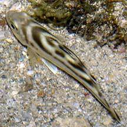
Sentosa,
Sep 04
|
What does it eat? It eats fishes,
insects, seaweeds and other small animals living in the sand.
Human uses: In some places, it
is a marketed fish, sold fresh, dried or salted. |
|
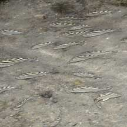
Sentosa, Jun 06 |
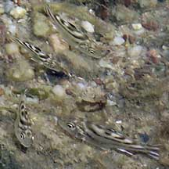
Tiny juveniles.
Labrador, Mar 07 |
| Crescent
perch on Singapore shores |
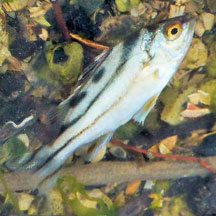
Changi, Feb 15
Photo shared by Lena Chow on facebook. |
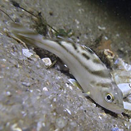
Punggol, Jun 18
Photo shared by Richard Kuah on facebook. |
|
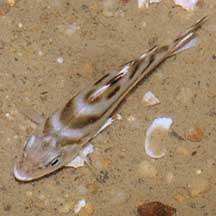
East Coast, Jun 09
Photo shared by James Koh on his
blog. |
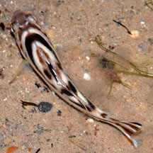
East Coast Park, Jun 15
Photo shared by Loh Kok Sheng on flickr. |
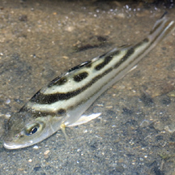
Tanah Merah, Jul 10
Photo shared by Marcus Ng on his
flickr. |
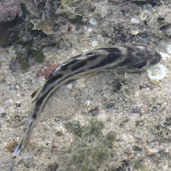
Pulau Tekukor, Jun 16
Photo shared by Geraldine Lee on facebook. |
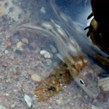
Pulau Tekukor, Jan 25
Photo shared by Liz Lim on facebook. |
|
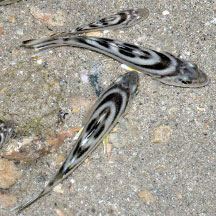
St Johns Island, Apr 16
Photo shared by Loh Kok Sheng on his blog. |
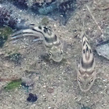
Kusu Island, Jan 24
Photo shared by Liz Lim on facebook. |
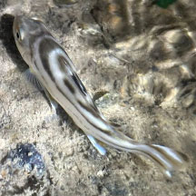
Pulau Hantu, Apr 25
Photo shared by Kelvin Yong on facebook. |
Links
References
- Allen, Gerry,
2000. Marine
Fishes of South-East Asia: A Field Guide for Anglers and Divers.
Periplus Editions. 292 pp.
- Kuiter, Rudie
H. 2002. Guide
to Sea Fishes of Australia: A Comprehensive Reference for Divers
& Fishermen
New Holland Publishers. 434pp.
- Lieske,
Ewald and Robert Myers. 2001. Coral
Reef Fishes of the World
Periplus Editions. 400pp.
- Lim, S.,
P. Ng, L. Tan, & W. Y. Chin, 1994. Rhythm of the Sea: The Life
and Times of Labrador Beach. Division of Biology, School of
Science, Nanyang Technological University & Department of Zoology,
the National University of Singapore. 160 pp.
|
|
|